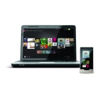

Microsoft introduces a powerful new Zune media player, PC software and online services
Zune provides comprehensive music and video experience across mobile devices, PCs and the TV to give consumers anywhere access to the music and video they love.
By Microsoft Corporation, Published 15th September 2009
REDMOND, Wash. - Sept 15, 2009 Zune, Microsoft Corp.'s end-to-end digital entertainment service and media player, today announced significant advancements for consumers. The new Zune HD touch-screen media player is now available at retail, and a powerful update to the Zune PC software is free for download. For the first time, standard and high-definition (HD) movies can be purchased or rented through the Zune Marketplace online store, and a new streaming music service on Zune.net lets Zune Pass subscribers listen to music from a Web browser. The updates to the Zune hardware, software and online services released today, combined with a new Zune video offering on Xbox LIVE coming later this fall, bring customers instant access to their favourite music and videos anywhere, across their mobile device, PC and TV.
"With today's announcement, the Zune business is growing into a comprehensive entertainment service that's no longer tied to any one screen or device," said Enrique Rodriguez, corporate vice president of the TV, Video and Music Business at Microsoft. "Zune lets consumers connect to their music, TV shows and movie content and enjoy it on the three screens they use every day."
Zune HD: Next-Generation Digital Entertainment
Zune HD marks a significant step forward for portable media players, combining powerful hardware components such as an organic light-emitting diode (OLED) multitouch screen, an NVIDIA Tegra HD processor and HD Radio capabilities with software advancements such as the new Quickplay menu, a well-featured Web browser, and engaging music and video playback features to deliver a new portable listening and viewing experience. Quickplay is a new signature menu for Zune, putting customers one touch away from the content they love, such as favourites, last played items and media most recently added, eliminating the need to dig through menus to find the music, videos, pictures or podcasts they want.
With Zune HD, consumers now have the ability to store and play back 720p HD video files to an HDTV using the new Zune HD AV dock accessory. Consumers can buy or rent HD content from the Zune Marketplace, sync that content to a Zune HD device, and take it with them to play back on a large-screen HDTV in the home or on the road.
Every Zune device currently includes a built-in FM tuner, and now the Zune HD device offers the first portable HD Radio receiver on a Wi-Fi-enabled device. With HD Radio, listeners experience crystal-clear sound on more than 2,000 stations in the U.S. and have access to more than 1,000 stations that simulcast content in a variety of formats, from adult contemporary to news talk. Zune HD users can also tag songs they hear on supported HD Radio stations for purchase immediately if in a Wi-Fi hot spot, or complete the purchase later when using the Zune PC software.
Zune HD also features new casual games and non-gaming functionality such as a calculator and an MSN Weather application. Later this year, Zune plans to release free applications such as Twitter for Zune and Facebook for Zune, in addition to fun 3-D games such as "Project Gotham Racing: Ferrari Edition", "Vans Sk8: Pool Service" and "Audiosurf Tilt." Games can be added to Zune HD via Zune Marketplace over the Wi-Fi connection or when connected to the Zune PC software.
Zune HD is available from major retailers with a black 16GB version for $219.99 (estimated retail price) and a platinum 32GB version for $289.99 (ERP). Additional red, green and blue devices are available in both capacities from Zune Originals (www.zuneoriginals.net), where customers can also customise the back of the Zune HD device with art and text etchings to create a unique Zune.
"Our research indicates that there's strong consumer demand for dedicated media players and Zune HD offers visible differentiation in this market," said Michael Gartenberg, vice president of strategy and analysis at Interpret LLC. "Microsoft is also offering some compelling software and services with the Zune ecosystem that will help Zune HD stand out from other offerings."
Greater Access to and Control of Music and Videos
Zune is also refreshing its free Zune PC software with new discovery and recommendation features, such as Quickplay and Smart DJ, that help users find and play digital content. The Quickplay menu available on the device is also featured on the PC software, allowing favorite content to be displayed along with most recently played and added music, video and podcast content.
The new Smart DJ feature showcases the power of the Zune software and services by creating endless playlists using any artist, album or song as the starting point. For Zune Pass subscribers, Smart DJ will queue song recommendations from both the customer's collection and from more than 6 million tracks in the Zune Marketplace. Nonsubscribers will get Smart DJ recommendations from the user’s music collection. Movies make their way into the Zune PC software this fall for rental and purchase. Users can watch movies in the Zune PC software with a full-screen viewing mode or sync them to Zune HD for viewing on the go. Many titles are available in HD and standard definition, with additional titles making their way into the catalogue in coming months.
Streaming Music, On Demand
Now as Zune Pass subscribers, not only can customers enjoy access to close to 6 million songs from the Zune Marketplace catalog for $14.99, the price of one CD a month, but they can also log into Zune.net and stream full albums and tracks through a computer's browser. Customers will also find the Smart DJ feature on artist pages in Zune.net, which means they are one click away from starting an endless playlist to keep them rocking through the day.
The Zune Service Extends Across Microsoft Platforms
Later this fall, Zune video will expand to nearly 20 million Xbox LIVE users, combining the Zune and Xbox video stores so consumers have access to more content provided by Zune. With unified video catalogs on Zune and Xbox LIVE, customers will have the ability to play purchased movies and TV shows across Xbox, the PC and Zune HD. Zune will also be introducing new technology enhancements in Xbox LIVE, providing a choice to download or instantly stream HD video in full 1080p with 5.1 surround sound. In addition, the integrated Zune video service will be rolled out later this fall to 17 international markets: Canada, Australia, Austria, Belgium, Denmark, Finland, France, Germany, Ireland, Italy, Netherlands, New Zealand, Norway, Spain, Sweden, Switzerland and the United Kingdom. More information on Zune and related images is available at http://www.zune.net/press.
About Zune
Zune is Microsoft's music and entertainment brand that provides an integrated digital entertainment experience. The Zune platform includes a line of portable digital media players, elegant software, the Zune Marketplace online store, and the Zune Social online music community, created to help people discover music. Zune is part of Microsoft's Entertainment and Devices Division and supports the company's software-based services vision to help drive innovation in the digital entertainment space. More information can be found online at http://www.zune.net/en-us/press.